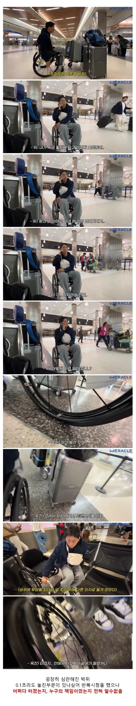

여러 불행 포르노 많이 봤지만 이 친구는 보법이 달라서 신선함
유리할땐 자기 자랑 불리할땐 불행포르노가 공존
가장 무서운 타입의 사람인듯
어쩌다 알고리즘 때문에 초반부터 봤는데 다친거조차 선역처럼 만들려는게 느껴졌었음
남탓 레베루가 다르다데스네
공이던 타이어던 공기들어간 물체는 공기빼고 탄담에 내리면 공기 다시 넣는게 기본 상식인디유
왜 탈 때 공기를 뺌?
대충 기압이 어쩌고
지렁이 들고댕겨야지
ㅇㄱ ㅈㅉㅇㅇ?
누가 뒤에서 밀었대???
섬네일은 "여러분! 여기보세요 제 바퀴가 터졌어요!!" 아님?
그럼 영상 제목에 '공항에선 자기탓 아니라네요' 라고 왜 씀?
아니 표정이 그렇다구 ㅋㅋ
여러분 여기보세요 5초간 심각한 정적......바퀴가 터졌습니다
여러분!!!!!! 제 바퀴가악!!!!!
무려!!
어랏??? 잘지내던 amy 가 왜 less가 됐을까요?
이게다 날 조롱하던 대한민국때문 아닐까요? 장애인 조롱금지법을 지지한다면 좋아요눌러주세용~!
??? : 시간 빌게이츠한테 잘못 걸렸네
??? : 다른 유튜버 다 쓰는 어그로 제목인데 무슨 문제?
근데 저런 제목들 클릭 유도랍시고 적어넣는 유튜버가 한둘이 아니라서 이슈는 안될듯
그런 유튜버들은 선한영향력이라고 꺼드럭되진않지
무려 제 바퀴가 터졌습니다. 하아.
해외까지 가면서 펑크 대비 하나도 안하고 가는게 좀 그렇네
대비하기 어려우면 통타이어로 교체하면 펑크 걱정없이 다닐 수 있잖아
파묘되면 파묘될수록 구역질나네..
미안하지만 관상이 평소에 너무 짜증을 많이 내서 얼굴에 굳은 것 같음.
머리를 다쳤나
관상이란 말은 경험칙으로부터 비롯된 것
??? : 바퀴가터져? 스페어들고다니면되잖아
근데 진짜 너 잘걸렸다 심심했는데 급으로 파헤치고 있네ㅋㅋ
맨날 죽음에대한 공포를 느낀다는데
다른 장애인분들은 진짜 공포스러워서 안전벨트 잘하고
대비할거 잘 챙겨놓는데
얘는 pd가 어짜피 살려줄거라 그런가
그냥 막 다님 팍팍다님 일반인들 칠까봐 걱정됨 안전벨트? 대비책? 이런거없음 그냥 문제생기면 아 대한민국 개쓰레기네 이게끝
해외여도 다를거없어보이는데 저런상황은
이 분이 술취하고 옥상에서 오줌 싸다가 혼자 넘어져서 장애인되고 바로 남탓하신 분임?
그 영상봤는데 자꾸 범인을 찾길래 나는 진짜 범죄에 당한줄 알고있었음ㅋㅋㅋㅋ
자신의 실수을 인정하기보다는 타인의 실수를 발굴하는 데 훨씬 열성적인 사람
자기자신한테는 한없이 관대한사람
아..저건 자전거샵 가도 고칠수있구나.,.
내가 현실에서 본 장애인은 타인을 대할때는 가면을 쓰고 멀쩡한척 하려고 하지만 속은 썩어있더라고
속에 쌓아둔 분노를 본인보다 더 약자라고 생각되는 사람에게 풀더라
평범하게 좋은 사람이었던 장애인 한명이
차량 주차하고 휠체어에 옮겨타는 과정에서 뭔가 마음에 안들었나 보호자로 보이는 늙은 여성에게 욕까지 하면서 화내는걸 보고 도데체 무슨 사연이 있는지는 모르겠지만
그 장애인과 거리감이 좀 많이 멀어졌던 경우가 있었음
인상이 많은걸 알려준다
ㅂㅅ
역시 장애인 클라쓰 어디안가죠
남탓좀 그만해
??? : 미국에 도착하자마자 휠체어 바퀴가 터져서 공항측에 항의하였습니다. 하지만 공항측에선 본인들 잘못이 없다고 해서 저는 이부분에 대해서 너무 화가 났습니다. 이건 제가 아니더라도 누구에게나 생길 수 있는 그런 문제인데도 공항의 그 누구도 책임지지 않았습니다. 문제는 그뿐만이 아닙니다. 공항에 휠체어 리페어 바퀴가 하나도 없었습니다. 솔직히 이부분에선 저는 납득이 가지 않았습니다. 그러면 휠체어를 이용하는 장애인분들은 휠체어의 바퀴가 고장나면 어떻게 되는 건지 너무 화가 났습니다.
물론 휠체어의 바퀴가 어느지점에서부터 펑크가 났는지 아직 모릅니다만, 공항측의 무책임한 태도와 휠체어 바퀴가 고장났을때...하...지금 생각해도 아찔합니다. 만약 일행이 없이 저혼자 미국에 도착했다면 저는 절망 그자체였을거같습니다. 물론 공항의 직원분들은 정말 친절하셨습니다. 저에게 도움을 주고자 했습니다. 하지만 공항측에선 아직까지 아무런 답변이 없습니다.
우리 공항 아니에유